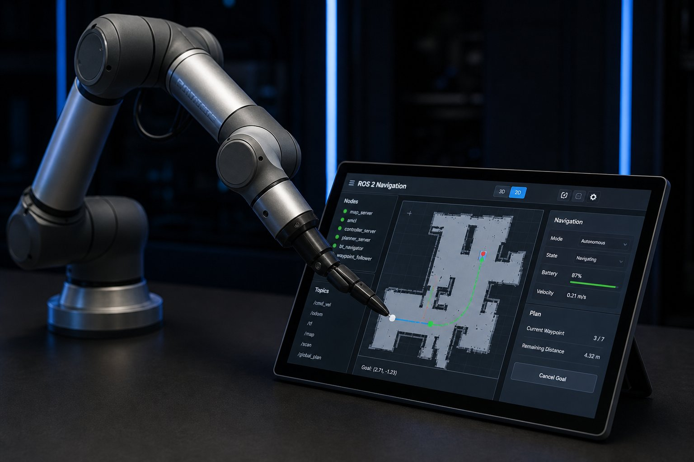

A force-torque sensor gives a robot arm information that position alone cannot provide. Instead of only knowing where the tool should be, the controller can estimate how strongly the tool is pressing, pulling or twisting against an object. That capability is useful for insertion, polishing, deburring, surface following, grasp verification and research. It also introduces new failure modes: a bad zero, an incorrect coordinate frame, vibration, cable forces or a poorly tuned controller can make the robot behave worse than a position-only system.

What is a force-torque sensor?
A six-axis force-torque sensor, often called an FT sensor, measures three orthogonal forces and three moments. The force channels are commonly labelled Fx, Fy and Fz; the torque channels are Tx, Ty and Tz. The measurement is a wrench: a vector that describes the load at a defined sensor frame. The sensor normally uses strain gauges or another precision transducer arrangement, signal conditioning electronics and a digital or analogue communication interface.
Force is measured in newtons (N) and moment in newton-metres (N·m). A moment is created when a force acts away from the sensor origin. For example, a 10 N lateral force applied 0.20 m from the origin creates approximately 2 N·m of moment. That lever arm matters when sizing a sensor: a light tool with a long offset can exceed a torque channel before it exceeds the force channel.
How to choose a force-torque sensor
Start with the process load, not a popular model name. List the expected contact forces, impact loads, tool mass, centre of gravity, maximum offset, robot acceleration and environmental conditions. Select a measurement range that covers the process with useful sensitivity while retaining enough overload margin for foreseeable contact and recovery events.
| Criterion | Question to answer | Why it matters |
|---|---|---|
| Force range | What are the steady, transient and impact forces on Fx, Fy and Fz? | Prevents saturation while preserving useful resolution. |
| Torque range | What moment is created by the tool offset and lateral force? | Long tools can exceed torque limits even with a small payload. |
| Overload and shock | What happens during an accidental collision or dropped part? | Protects the transducer and defines recovery procedures. |
| Bandwidth and latency | How quickly must the controller react? | Filtering and network delay affect compliant-control stability. |
| Interface | Ethernet, fieldbus, serial or analogue? | Determines wiring, drivers, time synchronisation and diagnostics. |
| Environment | Dust, coolant, washdown, temperature and cable movement? | Ingress protection and cable routing affect reliability. |
| Mechanical fit | Does the flange match the robot and end effector? | Pattern, stiffness, height and fasteners affect calibration and safety. |
Manufacturer specifications are model-specific. Do not copy a force range or accuracy value from one product into a comparison table for another. Review the datasheet for rated load, non-linearity, hysteresis, cross-talk, thermal drift, zero stability, update rate, communication protocol and calibration conditions.
Estimate the worst-case torque
A first sizing estimate is:
Here, M is moment in N·m, F is the lateral force in N and d is the perpendicular distance in metres. Add the moment produced by tool and payload weight when the sensor orientation changes. The robot manufacturer’s payload and wrist-moment limits still apply; an FT sensor does not increase the robot’s mechanical capacity.
Mechanical mounting and coordinate frames
The sensor is commonly installed between the robot flange and the tool, although some systems measure at the wrist or use a sensor embedded in a gripper. The mounting must be stiff, repeatable and free of unintended contact. Use the specified bolt pattern, fastener grade, torque and locating features. A loose adapter can look like sensor noise and can also change the tool centre point during a process.
Every wrench is meaningful only when its frame is known. A sensor may report loads in its own frame, while the robot controller plans motion in the base or tool frame. The software must apply the correct rigid-body transformation, including rotation and translation. A frame mistake can swap axes, reverse signs or create an apparent torque when the tool is only carrying its own weight.
- Record the sensor frame orientation relative to the robot flange.
- Measure or model the tool centre point and payload centre of gravity.
- Keep the sensor cable strain-relieved so it does not apply a changing side load.
- Prevent the tool, adapter or cable from touching fixtures during the zeroing procedure.
- Document axis conventions and signs in the commissioning record.
Calibration, zeroing and gravity compensation
Calibration is not one button. At minimum, distinguish factory calibration, installation zeroing, payload identification and application validation. Factory calibration characterises the transducer; installation zeroing removes the current bias; payload identification estimates the mass and centre of gravity of the tool; validation checks whether the complete robot cell produces believable values.
Practical calibration sequence
- Inspect the mounting, fasteners, connector and cable routing.
- Warm up the sensor and controller according to the manufacturer’s procedure.
- Place the robot in a known pose with the tool clear of contact.
- Capture several readings and inspect noise, bias and channel consistency.
- Identify tool mass and centre of gravity using multiple orientations when supported.
- Repeat the measurement after changing orientation to verify gravity compensation.
- Apply a known, safe test load and compare the transformed result with the reference.
- Save the calibration data with the robot program and hardware revision.
Gravity compensation is essential when the robot changes orientation. The sensor measures the tool’s weight as well as external contact. If the tool mass or centre of gravity is wrong, the controller may interpret gravity as a contact force and command an unwanted motion. Recalibrate after changing the gripper, adding a camera, moving a bracket or altering the cable path.
Sampling, filtering and latency
Raw FT data contains electrical noise, mechanical vibration and disturbances from robot acceleration. A low-pass filter can improve the signal, but it adds phase delay. A moving average is easy to implement but can blur impacts; a first-order exponential filter is compact but still changes the response time. Choose the cutoff from the process bandwidth and validate it with the actual robot speed and stiffness.
In this simple filter, x is the new measurement, y the filtered output and α the smoothing factor. Larger α follows changes faster but passes more noise. Never tune α by appearance alone: record contact force, overshoot, settling time and missed events. Keep a raw diagnostic stream where storage and cybersecurity policies allow it.
Sampling rate, controller period, transport latency and filtering delay form one control loop. A sensor may publish quickly while the robot driver, operating system and network deliver data less frequently. Timestamp messages, monitor stale data and define a safe response if communication stops. Do not use an ordinary force topic as a safety-rated stop signal.
Integrating a force-torque sensor with ROS 2
In ROS 2, a common representation for a six-axis measurement is geometry_msgs/msg/WrenchStamped. The message should contain the correct frame identifier and a timestamp from a known clock. A driver node can publish raw or compensated data, while separate nodes handle filtering, transforms, logging and process control.
# Inspect a force-torque topic and verify its frame
ros2 topic echo /ft_sensor/wrench --qos-reliability best_effort
ros2 topic hz /ft_sensor/wrench
ros2 run tf2_ros tf2_echo base_link ft_sensorIntegration checklist
- Confirm the vendor driver’s supported ROS 2 distribution and message type.
- Publish the sensor frame and verify the transform tree with a known load.
- Check units: newtons for force and newton-metres for torque.
- Measure message frequency, timestamp age and dropped-message count.
- Keep raw, filtered and gravity-compensated topics clearly named.
- Use watchdogs and timeouts so a lost sensor does not leave a motion command active.
- Test replay or simulation data before connecting a high-energy robot.
ROS 2 improves modularity but does not automatically make a control loop deterministic or safety certified. For a production application, define the real-time boundary, quality-of-service settings, network behaviour and update policy. A custom Python node may be suitable for experiments; a time-critical force controller may require a real-time capable implementation and a validated architecture.
Force-torque sensor acceptance test
Before using force feedback in a production program, create an acceptance test that separates sensor behaviour from robot motion. With the tool unloaded and clear of fixtures, record bias and noise after warm-up. Apply known loads in several orientations, transform the readings into the documented frame and compare them with the reference load. Repeat the test after moving through the intended workspace. A sensor that is accurate on the bench can still show cable drag, thermal drift or frame errors after installation.
| Check | Method | Pass evidence |
|---|---|---|
| Zero stability | Record unloaded readings after warm-up | Bias remains within the process limit |
| Axis signs | Apply a known force and moment one axis at a time | Direction and units agree with the frame definition |
| Gravity model | Rotate the tool through representative poses | Compensated readings remain near zero without contact |
| Latency and dropout | Monitor timestamps and disconnect behaviour safely | Watchdog stops the process without active motion |
| Overload response | Review limits and recovery procedure | Program reports saturation and a clear fault |
Store the result with the sensor serial number, tool mass, centre of gravity, robot program version, driver version and calibration date. This makes troubleshooting possible when a gripper, cable, adapter or software update changes the measurement chain.
Applications and limits
| Application | Useful signal | Typical engineering risk |
|---|---|---|
| Compliant insertion | Contact force and lateral moment | Jamming, singularities or excessive insertion force. |
| Surface following | Normal force along the tool axis | Surface variation, tool tilt and filter delay. |
| Deburring and polishing | Normal force with tangential load | Tool wear, vibration and unexpected snagging. |
| Grasp verification | Change in force after pickup | Payload variation and false positives from acceleration. |
| Research and teaching | Six-axis wrench visualisation | Uncalibrated frames and unsafe open-loop motion. |
An FT sensor can measure an interaction; it does not know whether that interaction is safe, intended or caused by a collision. It should not be marketed as a universal collision detector or as a replacement for guarding, safety scanners, interlocks, emergency stops or a formal risk assessment.
Safety and commissioning
Start commissioning at low speed and with reduced force limits. Keep people outside the robot cell unless the complete application has been assessed and the required collaborative or guarded operating mode is validated. Define limits for force, torque, velocity, displacement and duration. Test normal contact, unexpected contact, tool loss, cable failure, sensor saturation, stale data and loss of communication.
Buying checklist
- Write the expected force and torque envelope, including tool offset and impacts.
- Confirm robot flange, end-effector bolt pattern, stiffness and fastener requirements.
- Compare accuracy, hysteresis, cross-talk, drift, overload and calibration data.
- Verify interface, driver support, timestamping, ROS 2 compatibility and diagnostics.
- Ask about ingress protection, cable replacement, connector availability and service.
- Define the acceptance test with known loads, orientations and contact tasks.
- Budget for mechanical adapters, wiring, software integration and commissioning—not only the sensor body.
Sources and further reading
Review the current manufacturer documentation for the selected sensor, robot and end effector. Useful references include ATI Nano43 documentation, the Robotiq FT 300 documentation, the ROS 2 WrenchStamped message and the ISO 10218-2 information page. Specifications, interfaces and safety requirements can change by model and revision.
Related robot-arm guides
Continue with the robot arm risk-assessment guide, the article on robot arm calibration, the ROS 2 robot control guide and the end-effector selection guide. Together, these topics cover the mechanical, sensing, software and safety decisions around a complete robot cell.
Conclusion
Force-torque sensing adds a valuable layer of feedback to a 6-DOF robot arm, but reliable results depend on the entire measurement chain. Select the range from real forces and moments, mount the sensor rigidly, identify the correct frames, compensate tool gravity, filter with known latency and validate the controller at safe speed.
For production, document the payload, calibration date, coordinate conventions, software versions, limits and acceptance tests. Use force feedback to improve a defined process—not as a substitute for mechanical design, protective devices or safety engineering.
Frequently asked questions
What does a six-axis force-torque sensor measure?
It measures three forces (Fx, Fy and Fz) and three moments (Tx, Ty and Tz) at a defined sensor frame. The readings are commonly expressed in newtons and newton-metres.
Does an FT sensor make a robot collaborative?
No. Force measurement alone does not make a robot or application collaborative. The complete cell still needs an application-specific risk assessment and validated safety functions.
Why is gravity compensation necessary?
The sensor measures the weight of the tool and payload as well as external contact. Gravity compensation uses the payload mass, centre of gravity and robot pose to distinguish those effects.
Can I connect any FT sensor to ROS 2?
Not automatically. Check the manufacturer driver, supported ROS 2 distribution, message types, frame conventions, timestamps, QoS and real-time requirements before selecting the integration.
How should I choose the force range?
Estimate steady, transient and impact forces plus the moments caused by tool offset. Select a range that avoids saturation while retaining useful resolution, and respect the robot and tool mechanical limits.
Continue reading: the 6-DOF Robot Arm Master Guide
Review robot architecture, programming, calibration and application fundamentals.
Read the full guide →